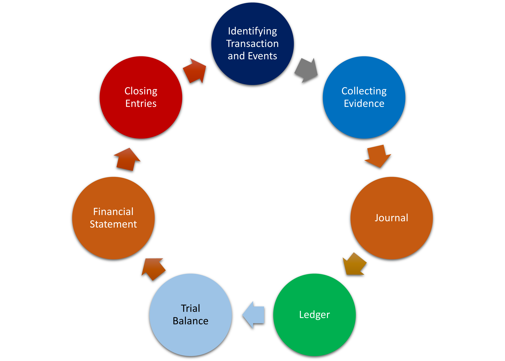

Accounting Cycle is a series of steps and processes which is required for an accountant to prepare a financial statement.
Identifying Transaction and Events is a crucial task of an accountant. It requires great deal of insight for an accountant to identify and analyze transaction aspects and events.
Chart of Accounts is a main tool to identify how a business is going to operate economically. Chart of Accounts is a list of all transactions or event, which is named as “Account”.
Besides that, a Detailed Budget will provide brief explanations about how the events to be identified, and whether it is categorized as “Financial” event or not. By the time, Chart of accounts and Detailed Budget will be adjusted and transformed into more compact forms as per need.
Chart of Account provides a detailed list of accounts set up to track financial transaction.
Detailed budget will allow or prohibit an accountant whether it can track a financial transaction into an account in the Chart of account or not.
For example: XYZ Inc. wants to purchase 4 vehicles for its delivery services for Rs. 30,000 each in the year 2022. The accountant might record it into Vehicles Account per the Chart of Accounts, but, when the accountant wants to check in the budget details, The budget amount for Vehicles Account is Rs 25,000 per vehicle. The accountant refuses to record the transaction and asks related purchasing employees or owner of the business to adjust the budget. It might require for the business owner to invest more in the capital or attain loan from a financial institution.
Every financial transaction needs a legal document to be approved by purchaser and seller, or which can be based for the transaction’s incurrence.
All the evidence are designed to be sufficiently and uniquely trackable. That’s why, proper record tracking lists are necessary to keep the track of these records in one place.
Examples include Invoice, Payment Receipt, Cheque, Bank Statement, Voucher, Purchase Order or Contract etc.
At the day end, Bookkeeper records all the transactions into a book called Journal.
Tracking list are all the example of “Single-Entry” accounting system, which is also traditional system of accounting. A Journal is a Book of Accounts which complies Debit-Credit system (also called Double-Entry recording system).
Small business might integrate tracking list into Journal by adding more columns in the Journal.
For example, a business pays salaries to 20 employees through cash of total Rs. 200,000.
In the tracking list, the business might list all the details of an employee, such as, employee ID, national ID, address, tax information, hire dates, designations, departments, shift timing, hours worked, leave days, deductions from salaries, etc.
In journal, the business only records: Date of transaction, Total Amount, Total Tax, paid through Bank or Cash, Account number, etc.
At the day end, Bookkeeper provides a “Daily Summary” to Accountant, such as total salaries, total paid through check, total paid through cash, equipment amount purchased on cash, total payable to Mr. X, total payable to Mr. Y, total capital received from owner(s), total loan received, total installment paid.
The accountant reconciles all these information with tracking lists and verifies all the evidence.
After verification process has been completed, the accountant records this information into another book called “Ledger". This process of recording information from Journal into the Ledger is called “Posting”.
Now, the information is fully ready to be summarized and to communicate with owner(s) and stakeholders of the business.
But before that, the accountant must verify all the records in the Ledger, as well.
Accountant has also got balance amounts from the ledger book. It is time to enter those balance amounts into a sheet called Trial Balance.
For example, A business wants to prepare a financial statement for a period of One Year e.g. 2022. Its accountant produces trial balance for the following totals from the ledger.
| Account Names | Amount (Rupees) | Amount (Rupees) |
|---|---|---|
| Sales | 0 | 200,000 |
| Purchases | 180,000 | 0 |
| Rent | 30,000 | 0 |
| Wages | 12,000 | 0 |
| Land | 500,000 | 0 |
| Vehicle | 36,000 | 0 |
| Owners’ Capital | 0 | 400,000 |
| Bank Loan | 0 | 150,000 |
| Payable to Mr. A | 0 | 8,000 |
| Total | 758,000 | 758,000 |
All the balances in the trial balances are entered into financial statements. Mainly businesses make three types of financial statements: Balance sheet, Income Statement and Statement of Owner’s equity.
If list of accounts is very lengthy, then, accountants total-up similar accounts and enters them into financial statement. That’s why, financial statements are also called Summary statements.
At the end of every financial year, accountant of a business closes its book of accounts. This means that the total of all the income and expenses mentioned in the trial balance is posted into the capital account. This process zero-down all the income and expenses account (if not zero-ed before) and transfers the balances into owners’ capital account.
Owner’s drawing account is also closed at the end of the financial year.